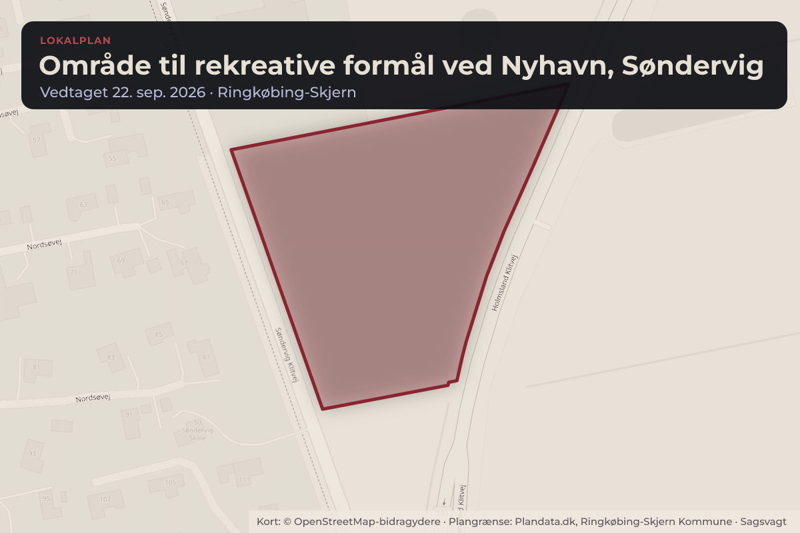
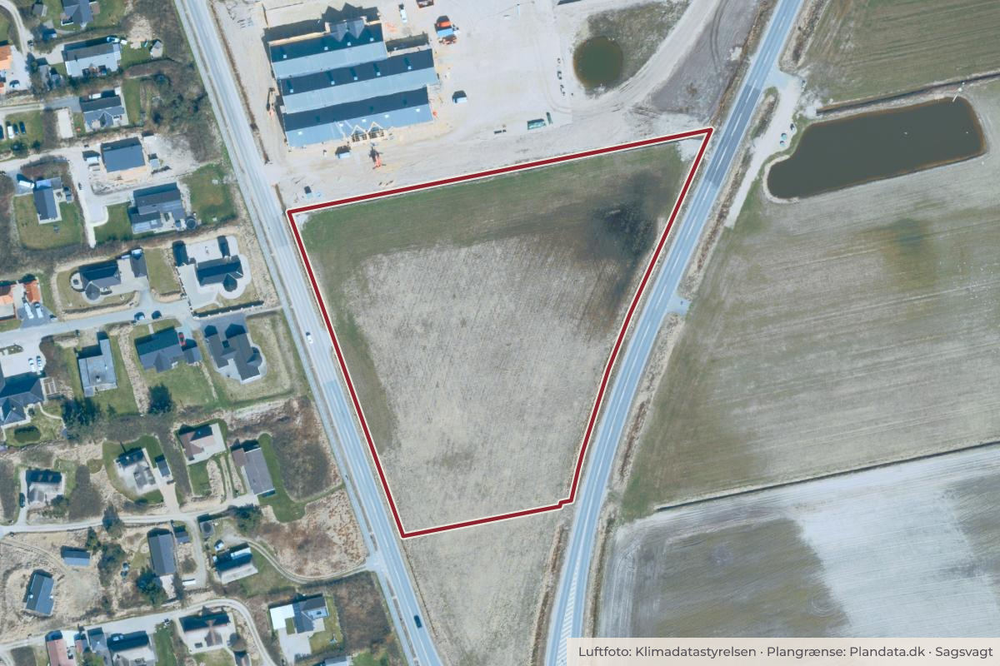

Besluttet 22. september, Plan- og Trafikudvalget, Ringkøbing-Skjern
Endelig vedtagelse af lokalplan nr. 528 for et område til rekreative formål ved Nyhavn i Søndervig
Administrationen indstiller, at Plan- og Trafikudvalget beslutter • at lokalplan 528 kun skal give mulighed for at opføre én flagstang med nationalflag pr. virksomhed. • at lokalplan 528 for et område til rekreative formål ved Nyhavn i Søndervig vedtages endeligt og offentliggøres.
Byggeri og lokalplanerErhverv og job

Kort: © OpenStreetMap-bidragydere. Plangrænse: Plandata.dk, Ringkøbing-Skjern Kommune.

Har du et billede fra Område til rekreative formål ved Nyhavn, Søndervig? Send det til os
Kort fortalt
- Forslaget
- Lokalplan 528 kun skal give mulighed for at opføre én flagstang med nationalflag pr. virksomhed.
- Lokalplan 528 for et område til rekreative formål ved Nyhavn i Søndervig vedtages endeligt og offentliggøres.
- Hvem
- Plan- og Trafikudvalget, Ringkøbing-Skjern Kommune
- Hvornår
- Tirsdag 22. september 2026
- Status
- Besluttet. Plan- og Trafikudvalget godkendte administrationens indstilling.
Læs hele sagen Kommunens egen tekst
Sagsfremstilling
Formålet med dagsordenen er, at Lokalplan nr. 528 vedtages endeligt.
Baggrund
Plan- og Trafikudvalget besluttede den 28. april 2026 at vedtage forslag til Lokalplan nr. 528.
Lokalplanens formål er, at videreføre områdets anvendelse til rekreative formål, herunder ferie- og fritidsaktiviteter som idrætsanlæg, opholdsarealer og ikke-støjende forlystelser. Dertil skal lokalplan skabe mulighed for at etablere kontor- og serviceerhverv i tilknytning til ferie- og fritidsformål med tilhørende lager og parkering.
Planforslaget der er vedlagt i bilag 1, har været fremlagt i fornyet offentlig høring i 8 uger fra den 29. juni 2026 til og med den 24. august 2026.
Årsagen til den fornyede offentlige høring skyldes, at kommunen modtog høringssvar fra Plan- og Landdistriktsstyrelsen i tilknytning til den offentlige høring. Styrelsen bad om ændringer i lokalplanens anvendelsesbestemmelser, omhandlende en præcisering af, at der kun kan etableres kontor- og serviceerhverv i tilknytning til ferie- og fritidsformål, herunder feriehusudlejning.
For at sikre, at delområde 1 fortsat kan anvendes, hvis feriehusudlejningen ophører, anbefalede administrationen at udvide områdets anvendelsesmuligheder. Delområde 1 skulle derfor også kunne anvendes til de samme rekreative formål som delområde 2. Muligheden for kontor- og serviceerhverv i tilknytning til ferie- og fritidsformål skulle fortsat gælde.
Plan- og Trafikudvalget godkendte ovenstående ændringer i lokalplanen den 23. juni 2026 og det tilrettede planforslag blev derefter sendt i fornyet høring hen over sommerferien.
Høringssvar
Kommunen har i den fornyede høringsperiode ikke modtaget nogen bemærkninger.
Flagstænger og flag
Ansøger ønsker at opføre tre flagstænger i tilknytning til udlejningskontoret med henblik på at opnå større synlighed. Ansøger har fremsendt et skriftligt notat med fremlæggelse af deres ønske - se bilag 2.
I ansøgers notat, fremhæves deres kontor i Bjerregaard som eksempel, men denne beliggenhed ligger helt isoleret og derfor fremstår det præsentabelt med de tre flagstænger der er opstillet dér.
I Nyhavn er der flere virksomheder i nærområdet og hvis de alle skal have mulighed for tre flagstænger med reklameflag, så vil det komme til at præge ankomsten til byen.
Ansøger påpeger, at tre flagstænger vil gøre virksomheden mere synlig, men hvis alle virksomheder i Nyhavn hver får tre flagstænger med reklame- og logoflag, vil det blot tilføre området mere visuel "støj" og kamp om turisternes opmærksomhed.
Lokalplan nr. 470 og lokalplan nr. 478 som gælder for det øvrige Nyhavn, herunder Netto - er udformet i tråd med de skiltebestemmelser der er for resten af byen. Hér er det ikke muligt at opføre flagstænger.
For at imødekomme ansøgers ønske, har administrationen tilføjet mulighed for at etablere én flagstang med nationalflag i den nye lokalplan nr. 528. Såfremt de øvrige virksomheder i Nyhavn under lokalplan nr. 470 og nr. 478 skulle ønske det samme, vil de dermed også kunne forvente en dispensation til at opsætte én flagstand med nationalflag. Men hvis den nye lokalplan giver mulighed for at tre flagstænger med reklame- og logoflag, skal de øvrige virksomheder i Nyhavn også have mulighed for tre flagstænger med reklame- og logoflag.
For at sikre en præsentabel ankomst til Søndervig, der ikke er præget af et stort antal flagstænger med reklame- og logoflag, og opnå lige og hensynsfulde vilkår i alle lokalplaner for Nyhavn, nr. 528, nr. 470 og nr. 478, anbefaler administrationen, at lokalplan 528 kun skal give mulighed for at opføre én flagstang med nationalflag.
Lovgrundlag og juridisk vurdering
Planloven
Lov om miljøvurdering af planer og programmer og af konkrete projekter (VVM)
Økonomi
I tilknytning til den politiske behandling af ansøgers ønske om en ekstra vejadgang fra Søndervig Klitvej, besluttede Teknik- og Miljøudvalget den 2. december 2025, at udgifter til etablering af vejadgange og eventuelt kanaliseringsanlæg afholdes af ansøger/bygherre.
Effektvurdering
Områdets planlægning kan muliggøre en flytning af et udlejningsbureau på Lodbergsvej, som hermed i stedet kan anvendes til butikker, der kan bidrage til mere handelsliv i bymidten, samt et større udbud af turismevenlige aktiviteter. Den ønskede planlægning vil således også være med til at opfylde kommunens turismepolitik med fokus på øget turismemæssig omsætning og levende bymidter.
Ved at flytte et udlejningsbureau med 1.500 sommerhuse ud af bymidten, vil der kunne opnås en væsentlig aflastning af infrastrukturen i byen på skiftedage. Dermed sikres også en mere fredelig oplevelse for de gående turister i Søndervigs handelsgader.
Indstilling
Administrationen indstiller, at Plan- og Trafikudvalget beslutter
• at lokalplan 528 kun skal give mulighed for at opføre én flagstang med nationalflag pr. virksomhed.
• at lokalplan 528 for et område til rekreative formål ved Nyhavn i Søndervig vedtages endeligt og offentliggøres.
Beslutning
Plan- og Trafikudvalget godkendte administrationens indstilling
Bilag
Kilde: Ringkøbing-Skjern Kommune, Plan- og Trafikudvalget, referat fra mødet tirsdag 22. september 2026, punkt 14. Læs den originale sag hos kommunen.